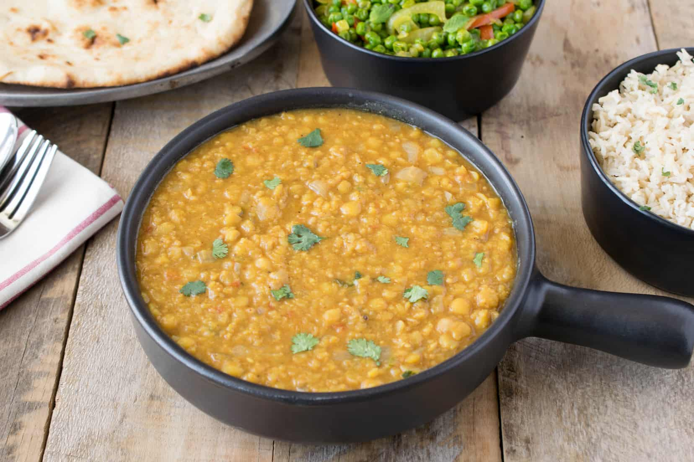

Dal

Description
Dal is a comforting and nutritious lentil dish seasoned with Indian spices, making it a staple in Indian households.
Ingredients
- Toor dal (200 g)
- Onions and tomatoes (1 each, finely chopped)
- Garlic cloves (2-3, minced)
- Spices (turmeric, cumin seeds, red chili powder)
- Ghee or oil
- Salt (to taste)
- Fresh coriander leaves
Steps to Prepare
- Wash the dal and cook it in a pressure cooker with water, turmeric, and salt until soft.
- Heat ghee in a pan and add cumin seeds. Let them splutter.
- Add garlic, onions, and tomatoes. Cook until soft.
- Mix the cooked dal with the tempering and simmer for 5 minutes.
- Garnish with coriander leaves and serve hot with rice or chapati.